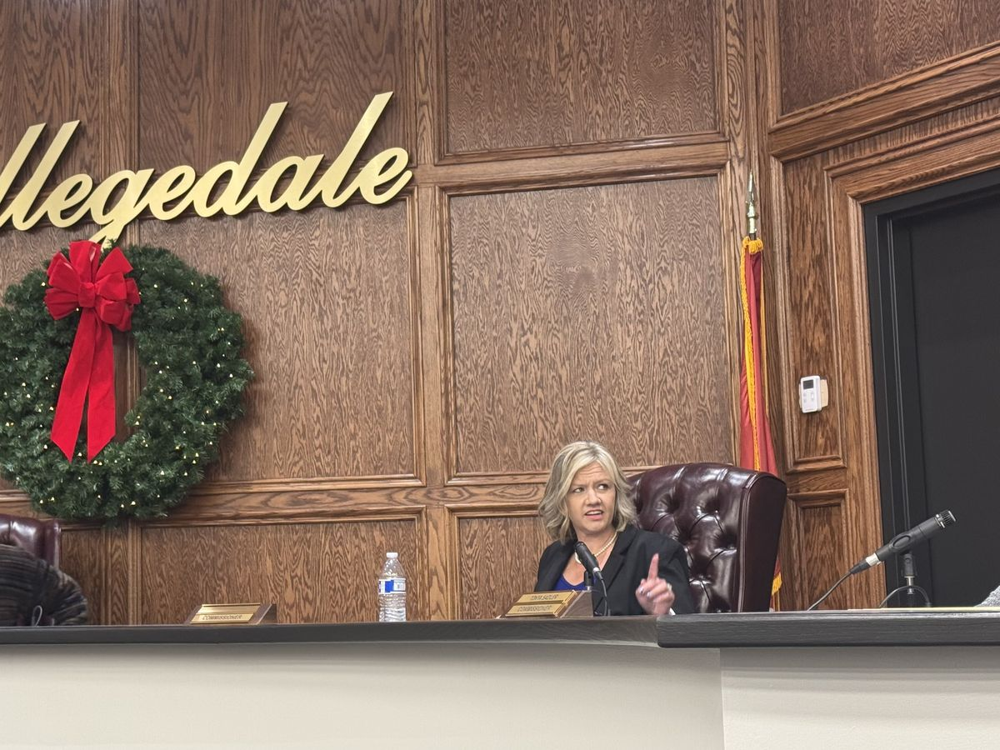

Commission Meeting
Where the votes happen — and every agenda includes time for citizen comments. Come watch the decisions get made, or step up and say something on the record.
Agendas & livestreamElected in November 2024 and sworn in that December, she's a year and a half into a four-year term — reading every agenda packet, asking the questions, and keeping Collegedale's business on the record.
Open to everyone
All three happen in person at the Municipal Building, and every one of them goes better with residents in the room. The next dates below update automatically.
Where the votes happen — and every agenda includes time for citizen comments. Come watch the decisions get made, or step up and say something on the record.
Agendas & livestreamThe working session where items get discussed before they're voted on. Public attendance is encouraged — it's the best seat in the house for the why behind next month's votes.
Her own open-door meeting — no podium, no formal agenda. Bring a question, a concern, or an idea, and talk it through face to face.
DetailsDates follow the city's regular schedule, including the city's practice of moving commission meetings to Tuesday after Monday holidays. Meetings are occasionally rescheduled or cancelled — the city's agenda page is always the official word.
The record so far
Every commission meeting since she took office is logged below with a link to the official video — because trust is built on receipts, not press releases.
On her desk
Traffic was one of the reasons she ran. She keeps pressure on the questions that matter: are the smart signals calibrated and maintained, and are road and sidewalk projects keeping pace with growth?
Real communication means more than social media posts — emergency alerts residents can count on, a city newsletter, and regular face-to-face time through Community CARE meetings.
Efficiency is on Collegedale's city seal. She pushes for decisions that account for the full long-term cost of the city's investments — and for spending that answers to the people who fund it.
Every fifth Monday
No podium, no formal agenda — just a commissioner and her neighbors in the same room. Bring a question about a vote, a concern about your street, or an idea for the city, and leave with a straight answer or a promise to chase one down.
CARE is how she ran, and it's how she serves: Considerate, Accessible, Responsive, Engaged.
Time & location are announced ahead of each meeting — see the Community CARE page.
In office
She reads every agenda packet before the meeting, asks clarifying questions in advance, and shows up ready to vote on the merits. Beyond the dais, she serves on the Katie Lamb Public Library Board and the Collegedale Airport Advisory Board.
Browse her full commission record — every meeting, dated and linked to the official video.
Explore her work
From around town